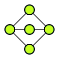
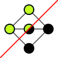
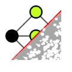
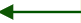

DB
create graph from db
connect to db only
Files
Download
Upload
...
Display
fit screen ...
see all elements
see all selected
layout ...
cose-bilkent
cose
grid
circle
concentric
breadthfirst
dagre
move aspect...
resize ...
horizontally
wider
narrower
globally
bigger
smaller
vertically
taller
shorter
align ...
horizontally
vertically
distribute ...
horizontally
vertically
rotate ...
Left
Right
90°
mirror
Nodes
select ...
none
all
swap selected
hide ...
not selected
selected
none
swap hidden
from selected edges...
source node
both sides
target node
filter by ...
name ...
degree...
native category ...
orphan
root
leaf
dry association
all associations
looping
has triggers
custom category ...
label ...
show
hide
font +5
font -1
list...
all
selected
follow & show ...
outgoing
both
Incoming
association
long paths
pk <- fk chains
delete
Edges
select ...
none
all
swap selected
hide ...
not selected
selected
none
swap hidden
from selected nodes...
outgoing edges
both directions
incoming edges
between selected nodes
filter by name
label ...
show
hide
font +5
font -1
list
delete
Model
FK display ...
raw FK
per column
triggers ...
generate impacts
remove impacts
associations ...
simplify
restore
filter FK ...
nullable
on delete cascade
trigger_impact
simplified associations
filter tables ...
with columns
DB layout ...
by dependencies
by custom categories
OR
AND
hover
Documentation
⏳ Loading graph...
🔍table definition
⚡table triggers
1/FK - 1/Col
label
select:
 
hide:

Choose a saved graph:
Close
Filter by name -- replaced by code for nodes/edges
search in hidden elements too
Search & Select
Cancel
Filter nodes by degree of edges
outgoing
>=
<
and
or
Incoming
>=
<
work only on visible nodes and edges
Search & Select
Cancel